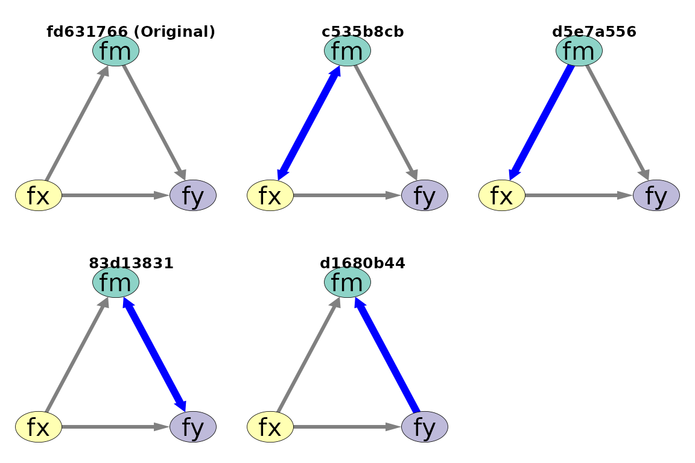
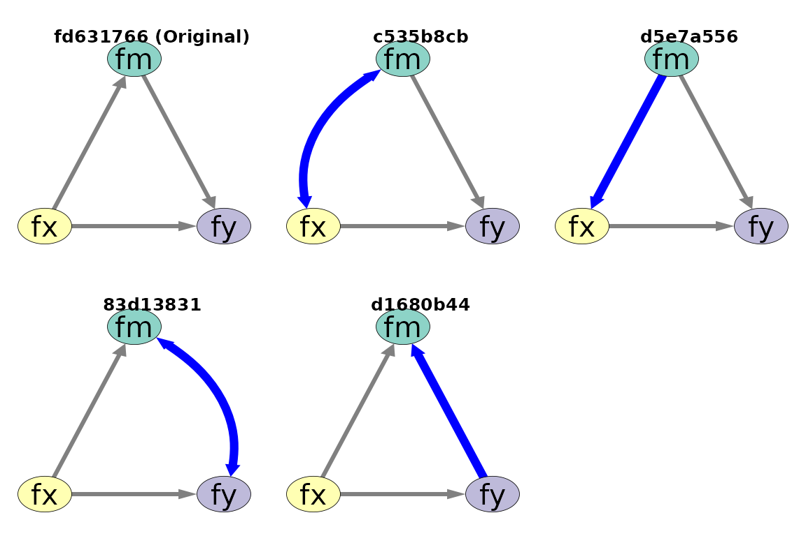

Make a Covariance a Curve
auto_curve_covariance.RdIdentify covariances
in a qgraph object and set
their curve values.
Arguments
- qgraph_obj
A qgraph object.
- base_curve
The curve value used to make a line a curve. The same value used by the argument
curveofsemPlot::semPaths().
Value
An object of the same class
as the qgraph_obj, with lines of
covariances set to curves, if any.
Details
This function can be used to automatically identify covariances in a model, which are represented by bidirectional edges, and set each of the line as a curve.
Examples
library(lavaan)
#> This is lavaan 0.6-21
#> lavaan is FREE software! Please report any bugs.
# Model 1
mod1 <-
"
fx =~ x1 + x2 + x3
fm =~ m1 + m2 + m3
fy =~ y1 + y2 + y3
fm ~ fx
fy ~ fm + fx
"
fit1 <- sem(
model = mod1,
data = data_test_3_factor_3_item
)
fit1_1_more <- drop_k(fit1)
fit1_1_more_1_less <- lapply(
fit1_1_more,
add_k
)
partables1 <- combine_partables(fit1_1_more_1_less)
eq_out_1 <- eq_models(
partables1,
original_model = fit1,
parallel = FALSE
)
eq_out_1 <- eq_models(
partables1,
original_model = fit1,
parallel = FALSE
)
layout_i <- matrix(c( NA, "fm", NA,
"fx", NA, "fy"),
ncol = 3,
nrow = 2,
byrow = TRUE)
layout_i
#> [,1] [,2] [,3]
#> [1,] NA "fm" NA
#> [2,] "fx" NA "fy"
p <- partables_plots(
eq_out_1,
original_model = fit1,
layout = layout_i,
label.cex = 1.5,
sizeLat = 15,
edge.width = 5,
asize = 5,
structural = TRUE,
par_diff_settings = list(
color = "blue",
width = 10
)
)
plot(
p,
ncol = 3,
nrow = 2
)

# Process the covariances
p2 <- p %p>% auto_curve_covariance()
plot(
p2,
ncol = 3,
nrow = 2
)
